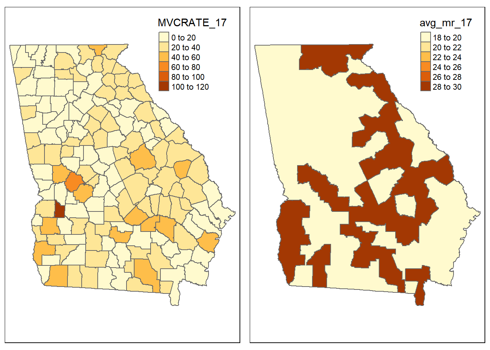
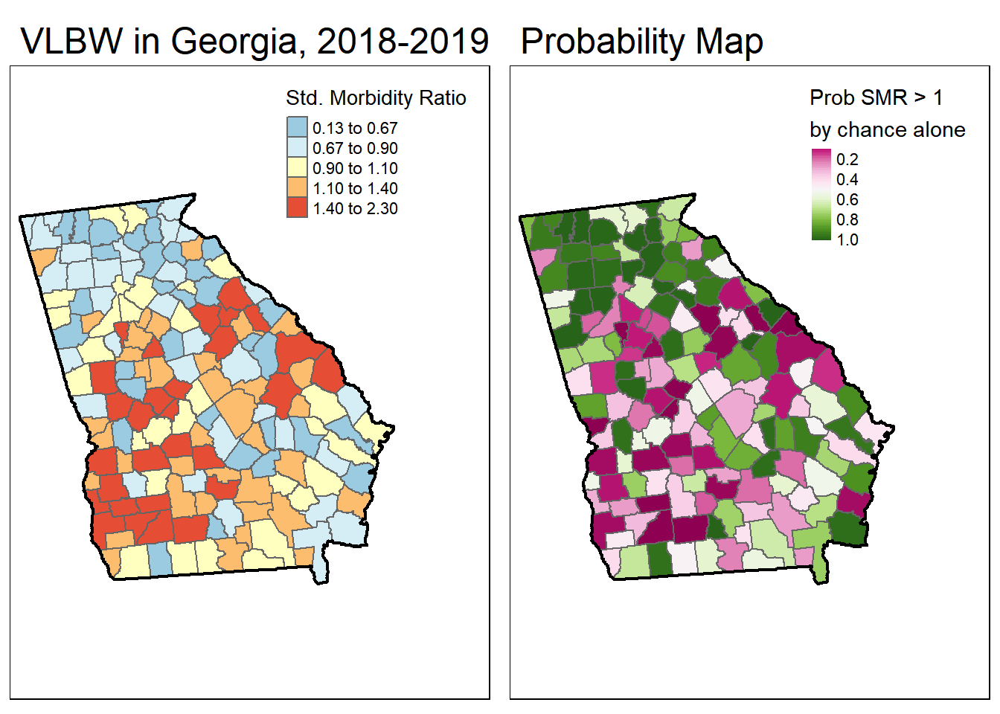
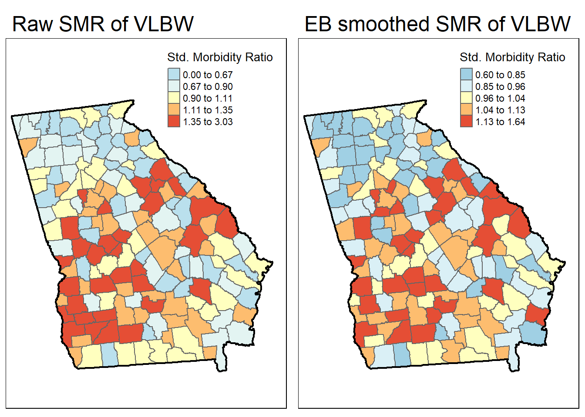

Week 17 Tips for using tmap
Base-R has capable data visualization and plotting capabilities, but these fall short when doing anything but the most simple maps with spatial data. Many other packages including sp and ggplot2 also have functionality specifically optimized for the data visualization needs of the spatial epidemiologist. We will have brief introductions to these and other packages.
But for this semester the workhorse mapping/cartography tool will be the tmap (thematic mapping) package. This package builds on the grammar of graphics logic built into ggplot2 where data visualizations are conceived of as a series of layers of information (e.g. axes, plot space, data points, lines, fill, legends, titles, etc) systematically stacked one on top of another. With tmap we start with a spatial object (e.g. a data object of either sf or sp class) and build a visualization by similarly combining or adding together sequential layers.
Once again, we will use data from the motor vehicle crash mortality dataset of Georgia counties (a vector polygon spatial data file), along with information about highways (vector line data file) and trama centers (vector point data).
First load the package, tmap and browse the help index:
After seeing the range of functions within tmap, we will import three datasets all stored in the geopackage format to begin visualizing:
# import (read) three spatial datasets stored in geopackage format
mvc <- st_read('GA_MVC/ga_mvc.gpkg')
hwy <- st_read('GA_MVC/ga_hwy.gpkg')
trauma <- st_read('GA_MVC/trauma_centers.gpkg')17.1 tmap mode
One nice feature of tmap is that it has two modes for plotting maps. You may develop a general preference for one over another, although in my opinion they serve slightly different purposes.
- The
plotmode produces conventional static maps that are viewed in the plot plane or can be saved to a file. These will be the main maps for dissemination in papers, posters, or many presentations. - The
viewmode is a more interactive plot in an html browser-like window. This mode allows the user to interact with the map including panning, zooming, and clicking on spatial objects to view underlying data. This is great for data exploration, and has extensions for web-served maps. However it is not so useful for any non-web-based dissemination or when you want to control the map.
You select the mode with the function tmap_mode() and either 'plot' or 'view' in the parentheses. Note that when you set the mode, all the subsequent maps are in that mode…you must re-submit the tmap_mode() call to switch back again. By default, the tmap_mode() is 'plot', which means it produces static maps. We will plot some static maps, then switch to ’view' mode to compare.
17.2 Quick maps: qtm()
The function qtm() stands for Quick Thematic Maps, and provides a step up from the simple plot() functions for quickly plotting spatial objects. The fundamental argument when submitting qtm() is the name of the object to be plotted.

This produces the geometry but no other information (note that unlike plot(), it does not plot a map for every variable!).
To produce a choropleth map (e.g. one in which objects are shaded to represent an underlying statistic or value), simply add the name of the variable.

Can you tell how the legend cut-points are determined? We’ll talk about when this matters and how to change it later.
Now try switching tmap_mode():
## tmap mode set to interactive viewingTry these things in view mode:
- By default it will be visible in your R Studio Viewer pane; there is an icon with a screen and arrow that allows you to show in new window…do this so it is bigger
- Zoom in and out
- Pan
- Hover over counties (what do you see with hovering?)
- Click on counties (what do you see when you click?)
- Underneath the zoom + / - is an icon like a stack of papers. This changes the background map (how does the background information change as you zoom in/out?)
- Click on icon that looks like stack of pages. This lets you change the background map (assuming you are currently connected to internet)
To change back (if you like) do this:
## tmap mode set to plotting17.2.1 Customizing qtm() for polygons
For polygon data, you might like to control several features including the title, the color palette, and the style by which the continuous variables are categorized in the legend.
qtm(mvc,
fill = 'MVCRATE_17',
fill.style = 'quantile',
fill.palette = 'YlGnBu',
fill.title = 'MVC Mortality \n(2017)')
The syntax above customizes the original plot in several ways:
- By changing the
fill.style(which is the style by which continuous variables are categorized in order to plot in a sequential ramp choropleth map) from the default (fixed or equal intervals) to a quantile style (by default quantiles have \(n=5\) so they are quintiles although other schemes including tertiles or quartiles are possible also) - By choosing a custom color palette, in this case the Yellow-Green-Blue (
YlGnBu) palette, which is one of several built-in options. - Providing a more informative title to the legend, rather than the default variable name.
17.2.2 Customizing qtm() for lines
qtm() (and tmap generally) can also handle other types of spatial data including line shape objects, and can provide some customization of the results. Try these for the highway dataset:

The basic plot of highways uses default colors and sizes, but the plot here uses the lines.lwd= argument to specify the line width or thickness. The lines.col= sets the color.
17.2.3 Customizing qtm() for points
And not surprisingly, there is similar control for point spatial objects, in this case the locations of the trauma centers.

Because symbols.size and symbols.shape were specified, the symbolized variables by modifying the size and shape. There are also settings for color. If you study the help documentation, notice that some arguments require numbers (and thus use LEVEL_number which is an integer) and some allow character/factors (and thus use LEVEL).
17.2.4 Finding valid color options
In base R there are many ways to specify colors including using standardized character strings, as well as HEX codes which are complicated alphanumeric labels that are used across industries to identify unique colors. Here is one of many lists of base-R color names: http://www.stat.columbia.edu/~tzheng/files/Rcolor.pdf
However for mapping we often want not just single colors, but reasonable sets of colors for symbolizing sequential values, categorical values, or diverging values. In the coming weeks we will talk about how to choose color and style for symbolizing maps, but it is worth knowing of a quick tool in tmap (or actually in an add-on package you installed called tmaptools) for seeing built-in color palettes.
NOTE: Occasionally this next step has caused my session of R to crash. Therefore I usually open a second instance of R Studio just to do the next thing. To do that simply go to Session in the R Studio menu and click New Session. This creates another completely independent instance of R Studio (e.g. none of the packages or data loaded in this current session are present in the new session unless you specify them).
Why did we use the package name (tmaptools) followed by a double colon (::)? This is a shortcut in R that lets you call a single function from a package without loading the package. Basically this says “go look in the package called tmaptools and load this specified function”. I use this shortcut (in general, not only for tmaptools) in one of two situations:
- There is a function with the same name in two or more packages, and specifying which package identifies the one I mean. For instance we will soon learn the package
dplyrand the functionselect()in this package is also the name of a function in another package for handling spatial data calledraster. So I often usedplyr::select()to disambiguate. - In situations like
tmaptools::palette_explorer()where I really only need the one function but currently do not need anything else from the package.
As you may discover with experimentation, the tmaptools::palette_explorer() function is actually a small interactive app that opens in a new window and lets you see an array of color palettes. You can see them divided by sequential, divergent, and categorical color ramps and you can move the slider to change how many categories and see the color ranges. The thing you want from this explorer is the abbreviated names to the left of each color ramp. You could also browse these same palettes by going to the Color Brewer website which is a compilation of recommended color palettes for cartography.
17.3 Building maps with tmap
qtm() is great for quickly making a map, but when you want more control over the map, you will want to shift to the full functions of tmap.
17.3.1 Building blocks in tmap
tmap produces maps using the grammar of graphics approach which means building up a final product as the ‘sum’ of several fundamental components, plus possible options layers. There are three broad components of maps in tmap:
- Specify the spatial object to map using
tm_shape(). - Following the call to
tm_shape()you generally specify the layers you wish to symbolize or map. In other words specifying a shape doesn’t plot anything…it just is the starting point. The layers are the actual things from that object/shape to plot. In the case of polygons you will usually usetm_fill()to specify a layer about the fill of the polygon, although other layers are available (e.g. see the base and derived layers listed when you look athelp('tmap')). - Finally, in many instances you want to customize other map layout features, such as the title or the legend, and you might like to add elements such as a North arrow or a scale bar.
For a given map, the various layers or steps are connected together in R code with a plus sign (+); this highlights that a map is the sum of many parts.
%>%) and the plus (+) is seemingly the same in that they both connect steps together but they are not! It is perhaps unfortunate that ggplot2 and tmap do not use the same pipe as dplyr. Beware that you choose the correct connector for the function at hand!
Note that steps 1 and 2 can be repeated for as many spatial objects as you wish to layer. So if you wanted to put points and lines on top of a polygon shape, you would specify tm_shape() and the corresponding layers for each spatial object in turn.
This code replicates our first map with qtm(), and basically says, "Start with the object mvc and symbolize it with two layers: the first fills the polygons to represent MVCRATE_17 and the second adds polygon borders:

Look at the help documentation for tm_fill() to see the myriad ways you can customize this map! It’s a little overwhelming, but I’d suggest looking at the style and palette arguments, and using the above-mentioned palette_explorer() to try out different colors and different styles for cut-points.
17.3.2 Customizing text on maps
There are several ways you may wish to customize the text on maps. For example you may want to provide a name for the legend, new labels for the categories, or a title, subtitle or caption for the whole map.
- To give a title to the legend in a map use the
title = 'xxx'in thetm_fill()(or other layer function) call. - To change the labels of the legend
- To add a source or credits annotation
# First, I create a vector of my custom legend labels
# (note, there must be same number of labels as there are categories in map)
myLabels <- c('Low (Q1)', 'Q2', 'Q3', 'Q4', 'Hi (Q5)')
tm_shape(mvc) +
tm_fill('MVCRATE_17',
style = 'quantile',
title = 'MVC Rate in 2017',
n = 5,
labels = myLabels) +
tm_borders() +
tm_layout(title = 'Motor Vehicle Crashes per capita in Georgia',
legend.outside = T) +
tm_credits('Source: Georgia OASIS, retrieved 2019')SIDE NOTE: The
tm_fill()option creates 5 bins or categories for plotting by default. For that reason it was unnecessary for me to putn = 5to specify how many categories. However I did so to be explicit about the number of categories because I am provide a vector of 5 labels to correspond to the categories. Of course one could choose a non-default number of categories (e.g.n = 3orn = 7), and if custom labels are provided there should be as many labels as categories.
17.3.3 Adding two or more spatial objects in one map
Just like in ArcGIS, additional spatial layers can be added up to produce a more informative map. For instance if we were interested in how highways and trauma centers related to motor vehicle mortality rates we could add these layers.
tm_shape(mvc) +
tm_fill('MVCRATE_17',
style = 'quantile',
palette = 'Purples') +
tm_borders() +
tm_shape(hwy) +
tm_lines(lwd = 2, col = 'red') +
tm_shape(trauma) +
tm_bubbles(shape = 'LEVEL',
col = 'pink')
Several things to note about above code:
- There are three separate spatial objects plotted, and each is called by starting with
tm_shape()followed by some additional function specific to the layer. See the help documentation, or the Tenekes article on Canvas for a table of which layers are available for which kinds of shapes (e.g. polygons, points, or lines). - Each function (e.g. each call with parentheses) is connected together with plus signs
- Within each function (e.g. within the parentheses), arguments are separated with commas
- I organize my code vertically because I think it makes it more readable than all on one line. However this is a point of style, not a requirement.
Try changing these arguments or try substituting different options!
17.4 Making small-multiple maps
Small multiples refers to the production of multiple maps to be presented as a set. We often desire small multiples as a way to visually compare two or more features when it is not easy to put them both on the same map.
There are three ways to prepare small multiples in tmap. As you look at these, notice how they differ with respect to the number of legends produced, the range of the legends, and the content or flexibility of customization within and between map panels.
17.4.1 Small multiples as a vector of variables
To plot side-by-side maps of two or more variables from the same spatial object, simply call a vector of variable names when specifying the layer or symbolization.
tm_shape(mvc) +
tm_fill(c('MVCRATE_05', 'MVCRATE_17'),
palette = 'Purples',
style = 'quantile') +
tm_borders()
17.4.2 Small multiples with facets
Facet plotting is something common in the package ggplot2. It refers to the production of two or more plot figures stratified by a ‘grouping’ variable. Typically in facet plots from ggplot2, the scale of the \(x\) and \(y\) axis are held constant across the set of plots so that the values plotted are readily comparable.
In tmap, facet plotting means creating multiple map plots that are distinguished by slicing or stratifying the spatial units along some by group. Faceting can be useful for highlighting patterns among different sub-groups in your spatial data. Unlike ggplot2, the scale of the legend and bounds of the x, y coordinate extent are not enforced to be the same across all panel maps by default. Instead the min/max x, y coordinates can vary according to the scope of content in each panel (e.g. by default, free.coords = T). By default the range and cut-points of the legend are held constant across maps (e.g. a single legend is produced to represent the data in all maps).
If you would like to force consistency between panels (e.g. either for better contextualization or for comparability), that can be specified. Argument free.coords = FALSE (e.g. each map should NOT have its own min/max x, y coordinate range) and free.scale=FALSE (e.g. each map should NOT have its own spatial scale or ‘zoom’ appropriate to the contents of that panel).
Here is a strange facet map produced by stratifying on the NCHS urban/rural six-level categorization scheme. First I have code for what happens by default, and then with setting the free.coords and free.scales to FALSE. You can see that by default, each map frame zooms to maximize the selected object, so the scale is different in each. In contrast when forced to maintain a constant scale it is easier to see the relative size and locations of each subset.
# Basic facet map with defaults
tm_shape(mvc) +
tm_fill('MVCRATE_17') +
tm_borders() +
tm_facets(by = 'nchs_code')
# With facet parameters set to FALSE
tm_shape(mvc) +
tm_fill('MVCRATE_17') +
tm_borders() +
tm_facets(by = 'nchs_code', free.coords = FALSE, free.scales = FALSE)
17.4.3 Facets for time-series
How small multiples from vector-of-variables and facets differ:
One point, which might not be obvious at first, that distinguishes these first two methods of small multiple map productions is how they use data to separate maps. Notice that the first option above (supplying a vector of variables to plot using the c() call within tm_fill() for example) is good for mapping things that are wide in your data. In other words it maps separate columns as different maps.
In contrast the tm_facets() creates separate maps by stratifying rows of data. In other words it is good for mapping things that are long in your data. If you are not used to the idea of long versus wide data this might seem confusing, but its a relatively common distinction in data handling.
An extension of this idea is that if you wanted to map a time-series (e.g. maps of disease rates each year over a series of years), you could create a long dataset by year. Imagine a dataset with a row of data for every county in Year 1; then a separate dataset with a row of data for every county in Year 2; and so on. By stacking these datasets your dataset becomes as long as the number of geographic units X the number of years. You could not do this easily in ArcGIS, but it is perfectly allowable with sf class spatial objects. When plotting, simply use tm_facets() with by = YEAR to produce your series.
Here is an example of taking our current ‘wide’ dataset (e.g. we currently have 3 years in separate columns), and making it a long dataset (e.g. a single column for MVCRATE, and a separate column for year to distinguish which year-rate we are talking about). Then we produce time-series faceted maps. In this case we use the tidy functionality of the pivot_* verbs (e.g. read more about use of pivot verbs here)
## [1] 159mvc_long <- mvc %>%
select(GEOID, NAME, MVCRATE_05, MVCRATE_14, MVCRATE_17) %>%
as_tibble() %>%
pivot_longer(cols = starts_with("MVCRATE"),
names_to = c(".value", "year"),
values_to = "mvc_rate",
names_sep = "_") %>%
mutate(year = 2000 + as.numeric(year)) %>%
st_as_sf()
nrow(mvc_long) # N =477 rows corresponds to 3 years each for N =159 counties ## [1] 477Now, plot that long sf object ignoring the fact that there are three rows of data for every county. Can you tell what happens?
# This is the WRONG way to plot a long dataset!
tm_shape(mvc_long) +
tm_fill('MVCRATE') +
tm_borders()
# If you want a single map from a long dataset, use the subset() function ...
tm_shape(subset(mvc_long, year == 2017)) +
tm_fill('MVCRATE') +
tm_borders()
Notice how both maps above are the same? Try changing the YEAR == 2017 to a different year. You can see that when we ignored the long format, tmap essentially plotted the Georgia counties 3 times, with the last layer (e.g. 2017) being on top and thus the one we see. So beware…
Now let’s take advantage of the long format dataset to facet or sub-divide the dataset into separate maps as delineated by the year variable:

17.5 Small multiples with tmap_arrange()
The third way to make small multiples, and one that gives maximum control over each separate panel, is to create them one at a time, and then combining them into a panel using the function tmap_arrange(). The notable difference here is that we name each map object as we create it, and then provide the list of names to tmap_arrange().
m1 <- tm_shape(mvc) +
tm_fill('MVCRATE_05') +
tm_borders()
m2 <- tm_shape(trauma) +
tm_symbols(shape = 'LEVEL',
col = 'LEVEL')
tmap_arrange(m1, m2)
For this example I used two totally different shape objects to illustrate the point that tmap_arrange() is particularly good for combining things that are not simply wide or long subsets of a single dataset. This approach is also good if you are taking a totally different approach to symbolizing two variables in the same dataset, as it doesn’t assume you are trying to keep anything the same.
17.6 Summarizing small multiples
Small multiples are not a common visualization in GIS software like ArcGIS. To do small multiples there you need to create multiple data frames and manipulate them in Layout view; it is often difficult to get consistent scales, legends, or coordinates.
In R, the idea of faceting is quite common and has much potential for spatial epidemiology, which is why it is emphasized here. Below I summarize some of the overarching differences among the three approaches above for future reference.
| Feature | Vectors c() of variables |
tm_facets() |
tmap_arrange() |
|---|---|---|---|
| Approach | Different map for different columns/variables | Different map for different rows/subsets | Completely independent map images |
| Scale or legend | Separate legend for each variable | Choose either single scale across panels, or separate | Each panel independent |
| Coordinates | Same for all variables from same sf object |
Option of same or different for each panel | Each panel independent |
| Typical use | Quickly view set of variables | Highlight spatial sub-regions | Custom creation of figure |
17.7 Saving maps
Saving maps for use in other programs or applications is important. Images can be saved in the same output formats available in other R image functions. In other words we can save files as .png, .pdf, .jpg, .tiff, etc.
A quick way to do is to use the export button from the plot pane in R studio.
Recall that the way any graphic in R looks is shaped in part by the active graphic device. Your screen plot pane is the default graphic device and things are arranged to look good on your screen. However when you save to a different graphic device (e.g. a jpg device), things might look different. So sometimes you have to do some trial-and-error troubleshooting with the width, height, and dpi options.
To specify the save via code, rather than the export button (which is a good idea in terms of reproducible code!) use tmap_save(). To save the final two-panel map I created from the previous step I could do this:
# First make it an object by giving it a name, m3
m3 <- tmap_arrange(m1, m2)
tmap_save(m3, filename = 'mvc_maps.png')## Map saved to C:\Users\mkram02\Box\SpatialEpi-2020\EPI563-SpatialEPI\mvc_maps.png## Resolution: 2100 by 2100 pixels## Size: 7 by 7 inches (300 dpi)You should now have the skills to make a wide variety of maps in R. To fine-tune how tmap works and to customize for each desired purpose, you will likely spend a lot of time looking at the help documentation or other online resources. While sometimes tedious, this process of figuring out how to make just the map you want is valuable. With time you will be able to create sophisticated maps quickly and efficiently.